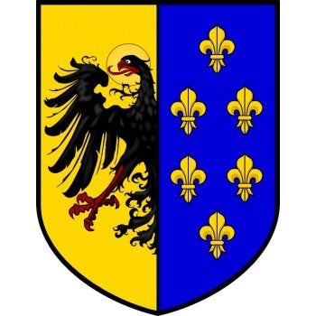

Romersk Kejsare, Frankisk Kung m.m. Blev 71 år.
742-04-02 Liege, Frankrike. [1]
814-01-28 Aachen, Cologne, Tyskland. [1]
Karl den store (latin: Carolus Magnus, franska: Charlemagne, tyska: Karl der Große), född troligtvis 2 april 742[30] i nuvarande Liège, död 28 januari 814 i Aachen, var det frankiska rikets regent 768–814. Han ärvde den frankiska kungatronen. Han kröntes till romersk kejsare på juldagen år 800, och tillhör de främsta gestalterna i europeisk medeltidshistoria. Karl den stores rike kom att ungefärligen omfatta nuvarande Frankrike, västra Tyskland, norra Italien samt Schweiz och Österrike. Karl, som själv lärde sig läsa först i vuxen ålder, organiserade från huvudstaden Aachen den så kallade karolingiska renässansen. Denna innebar ett kulturellt framsteg i förhållande till den tidigaste medeltiden.
Innehåll
1 Biografi
1.1 Fälttåg mot Lombardiet
1.2 Fälttåg mot morerna
1.3 Fälttåg mot Sachsen
1.4 Romersk kejsare
1.5 De första vikingarna
1.6 Den sista tiden
2 Några av Karl den stores barn
3 Övrigt
4 Noter
5 Vidare läsning
6 Externa länkar
Biografi
Uppgifterna om Karl den stores liv är inte jämnt fördelade. Det finns många källor från hans senare år, där biografin Karl den stores liv av den frankiske lärde Einhard och dessa verk samt brev som skrevs av poeten Alcuin är de främsta. Däremot saknas nästan alla uppgifter om hans tidiga liv. Det är inte troligt att Karl blev vis som vuxen och därför antas att han liksom sin bror blev utbildad vid Klosterkyrkan Saint-Denis. I Einhards biografi står, att ingenting blev nedtecknat om Karls barndom (kapitel IV) och att ingen från den tiden var vid liv när han själv skrev biografin 15 år efter Karls död.
Karl var äldste son till kung Pippin den lille av Frankerriket och Bertrada av Laon. När Pippin avled 768 delades riket mellan Karl och hans bror Karloman, men Karloman avled 771 och Karl blev ensam regent över Frankerriket.
Han var först gift med Himiltrude, vilken försköts då Karl gifte om sig 770 med Desiderata, dotter till langobardernas konung Desiderius. Mindre än ett år senare försköt han Desiderata och gifte om sig med Hildegard från Swaben, av okända skäl. Kung Desiderius blev upprörd, krig utbröt, och det slutade med att Karl intog Longobardiet 774. Som kung över frankerna och langobarderna tog han nu den latinska titeln Rex Francorum et Langobardum.
Tiden var mycket orolig. Frankerna blev själva tidigt kristna men höll nu på att återgå till sin förkristna religion. Saxarna i norra Tyskland var fortfarande fast förankrade i hedendomen. I söder stred den romersk-katolska kyrkan med Langobarderna om makten över det som idag är Italien. Från Iberiska halvön expanderade Saracenerna (se kalifat av Córdoba) mot norr och från öst närmade sig Avarerna. Karl den store visade direkt att han tänkte bekämpa dessa folkslag och att han inte hade något emot att kämpa vid flera fronter samtidigt.
Fälttåg mot Lombardiet
Karl skilde sig från sin hustru Desiderata, vilket var mycket ovanligt vid denna tid. De bakomliggande skälen är oklara, men resultatet blev förvecklingar med Himiltrudes far Desiderius – förvecklingar som Karl använde sig av politiskt.
Karl gick ut i fälttåg mot Desiderius, vilket bland annat motiverades med att påven måste skyddas mot langobarderna. På vägen plundrades och förstördes det saxiska hednatemplet vid Irminsul, och alla städer längs fälttåget gav sig omgående, utom Pavia, vars fästning Karl erövrade i juni 774. Karl kallade sig nu Langobardernas kung och Patricius Romanorum. Högt aktad av påven, och fruktad av langobarderna återvände Karl i triumf hem till Franken. Karl godkände donationen som hans far överlämnade till kyrkan och som senare blev Kyrkostaten. Det longobardiska hertigdömet Benevent vid den italienska stövelns sporre blev däremot bestående fram till 1000-talet.
Fälttåg mot morerna
778 riktade Karl sin uppmärksamhet mot Spanien men fälttåget var mindre lyckat. Emiren från Zaragoza hade sökt hjälp mot emiren från Córdoba. Regionen stabiliserades men vid tillbakatåget drabbades den frankiska hären av ett större nederlag vid Roncesvalles i Pyrenéerna. Nederlaget skildrades litterärt i Rolandssången.
Karl den stores fälttåg var bakgrunden till uppkomsten av furstendömet Andorra. Landet var efteråt de jure självständigt och därför är kejsaren i hög grad omnämnd i statens nationalsång El Gran Carlemany.
Fälttåg mot Sachsen
Medan Karl stred mot den muslimska hären i Spanien 778 gjorde gamla Sachsen uppror. Karlsburg (nuvarande Paderborn) och alla kyrkor, kloster och kristna byar ända fram till Rhen brändes, och detta sachsiska fälttåg stoppades först vid Fulda av frankiska styrkor. Karl återvände från Spanien, och tvingade sachsarna till underkastelse. Men de reste sig snart igen och började åter under hertig Widukind att bränna kyrkor och mörda kristna grevar och herremän.
När Karl för andra gången slog dem i strid visade det sig att Widukind flytt, varvid Karl krävde utlämnandet av alla dem som tagit initiativ till upproret. Han lät därvid halshugga 4 500 man i vad som kallas Slakten vid Verden. Året var 782, det tioåriga kriget mot Sachsen var över, nu hade nästan allt motstånd mot kristendomen krossats, och på julafton år 785 lät Karl döpa Widukind. Karl fortsatte konsekvent att bryta ner allt motstånd, genomförde formliga razzior och lät deportera 10 000 sachsare till Gallien och andra delar av riket. Därmed bekände sig större delen av germanerna till kristendomen, allt motstånd var brutet och Karl var ensam härskare. Han drog sig hem till hovet i Aachen för att organisera administrationen av sitt rike.
Romersk kejsare
På juldagen år 800 belönades Karl i Peterskyrkan i Rom för sina insatser för kristendomen. Påven Leo III krönte Karl till Carolus Augustus, den store och fredbringande kejsaren av Rom, med ett gyllene diadem och en titel som då inte använts sedan Romulus Augustulus abdikerade som västromersk kejsare 476, alltså på över 300 år.
Åren 802–804 vistades också Abul-Abbas vid hovet i Aachen och i Augsburg; han var såvitt man vet den första asiatiska elefanten norr om Alperna sedan Hannibals fälttåg.
De första vikingarna
Mot slutet av sitt liv tillbringade Karl mycket tid i Aachens domkyrka. Under denna tid hade de norra gränserna i hans rike börjat plundras av vikingar ledda av den danske kungen Godfred. Einhard beskriver Godfred som en farlig överlöpare med storhetsvansinne.
Obotriterna, som allierat sig med frankerna under erövringen av Sachsen, anfölls och tvingades till underkastelse. Den obotritska staden Reric brändes ner och befolkningen tvingades flytta in till Hedeby. Karl sände sin son Karl den mindre till Elbe för att förhindra en invasion av Sachsen. Godfred sände bud till Karl om där han sa sig villig att mäkla fred, men förhandlingarna föll samman. Karl den store placerade istället ut en permanent garnison norr om Elbe, vilket tyder på att Karl den store såg allvarligt på det danska hotet. Karl den store planerade för ett fälttåg emot Godfred, men detta kom helt av sig när Godfred plötsligt anföll den frisiska kusten med 200 långskepp. Efter att ha plundrat kusten steg vikingarna iland och krossade allt motstånd och krävde skatt av Frisierna. Innan Karl hann handla så drog sig dock flottan hem igen. Godfred hade lönnmördats och efterträtts av Hemming av Danmark som kung.
Hemming förhandlade fred med Karl och en gräns emot Danmark vid Elbe beslöts i Heiligen 811.
Den sista tiden
För att säkra arvkungadömet krönte Karl själv sin son till kung av Franken den 11 september 811 i Aachen, men riket kom ändå att splittras och paradoxalt nog för Karl den store, hade han med sitt religionskrig för lång tid framöver tagit makten från kejsare, kungar, grevar och bönder. Påvestolen i Rom kom att bli den viktigaste maktfaktorn i Europa, något som även de världsliga herrarna måste rätta sig efter. 814 avled Karl den store och lämnade efter sig ett imperium som med tiden kom att delas upp bland hans efterkommande.
Några av Karl den stores barn
Pippin puckelryggen
Ludvig den fromme (778–840), helig romersk kejsare åren 813–840.
Pippin av Italien
Övrigt
Karl den store var inte analfabet, men han lärde sig läsa först i vuxen ålder, och hade svårt att skriva. Hans handstil var mycket dålig, vilket troligen är anledningen till att påståendena om hans analfabetism vuxit fram. Han sägs ha varit ovanligt lång, och han sägs även ha haft en väldigt ljus, pipig röst..